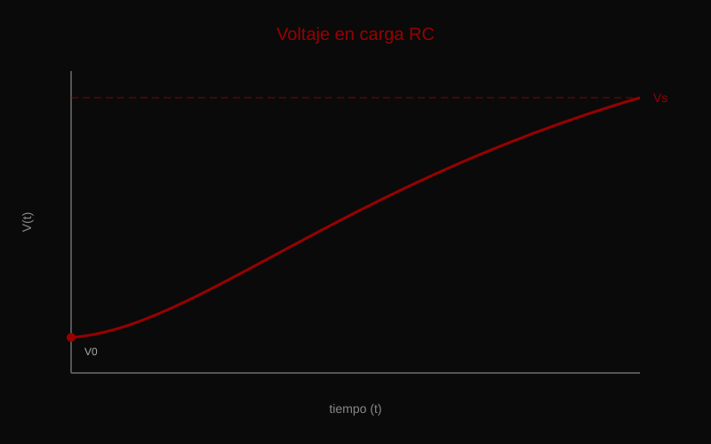
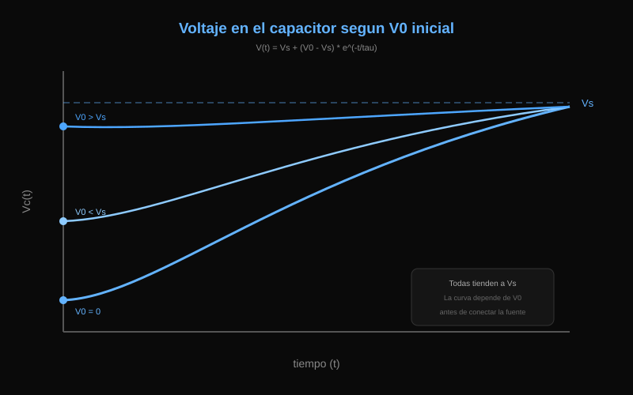
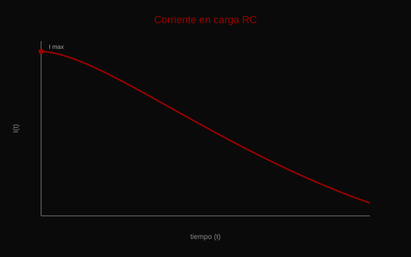
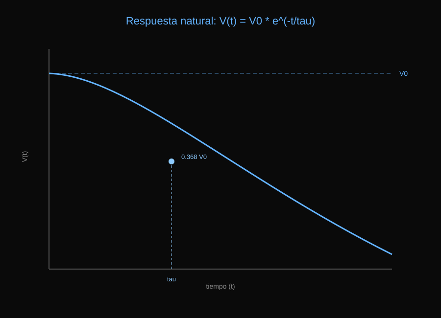

Voltaje
El voltaje aumenta exponencialmente hasta acercarse al voltaje de la fuente.
Estudio dinámico de carga y descarga en circuitos RC mediante análisis matemático y comportamiento transitorio.
Cuando se conecta una fuente de voltaje a un circuito RC, el capacitor comienza a cargarse progresivamente. El voltaje aumenta exponencialmente hasta aproximarse al voltaje de la fuente.

El voltaje aumenta exponencialmente hasta acercarse al voltaje de la fuente.

La respuesta depende de las condiciones iniciales del capacitor antes de la carga.

La corriente disminuye exponencialmente a medida que el capacitor se carga.
Cuando la fuente de voltaje se elimina abruptamente, el capacitor cargado se convierte en la única fuente de energía. El voltaje decae exponencialmente con el tiempo.
Determina la rapidez con la que el capacitor libera la energía almacenada.
Tras una constante de tiempo, el capacitor conserva el 36.8% de su voltaje inicial.
El voltaje del capacitor disminuye exponencialmente. La energía inicial se disipa sobre la resistencia hasta alcanzar el equilibrio.

El circuito recibe energía externa y el capacitor incrementa su voltaje hasta el estado estable.
El sistema depende de la energía almacenada en el capacitor, produciendo un decaimiento exponencial.